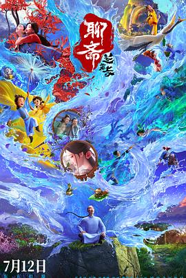

6.7
聊斋：兰若寺
Curious Tales of a Temple
2025
中国
评分 6.7
导演:
崔月梅 / 刘源 / 谢君伟 / 邹靖 / 黄鹤宇 / 刘一林
演员:
卢力峰 / 林强 / 张赫 / 陈子平 / 傅铂涵 / 橙璃 / 刘校妤
类型:
剧情,喜剧,奇幻
剧情简介
书生 蒲松龄 行路至一片荒野，夜宿古刹 兰若寺。殿堂孤寂，月光倾洒，他未及安眠便被一只戏谑的蟾蜍与一只沉默的玄龟掳入井底——那是一口历史翻腾的古井，周遭漂浮着旧纸卷、烟雾与故事的碎片。井中，他们以“讲故事”为赌局：两只精怪你来我往，不断对决谁讲得更震撼；蒲松龄被迫评判，却也在沉浸里倾听。每篇故事如烟火绽放：有道士借剑控鬼，有莲花化身守护者，有画皮女妖换骨成魅。这些短篇从《崂山道士》《芙蓉公主》《聂小倩》《画皮》《鲁公夫人》中提炼而成，每一幕都浸透着志怪、情欲、救赎与离别。 镜头在古寺、暗井、石窗、月影中穿梭：烛光闪过，蟾蜍露出牙尖；井壁裂缝里，莲瓣跌落。蒲松龄在恐惧与好奇中挣扎，他听那无数被遗忘的怪谈低语，也发现自己不只是旁观者，而是参与者。那些被讲出的故事，仿佛转化为他体内的勇气与诧异。影片将 “1＋5” 结构贯穿始终——主线井下世界连接五篇独立短篇，而每一篇皆风格迥异，从童话般纯净到黑暗志怪再至热血救赎。整体既有幽默也有肃杀，既有轻松嬉戏也有凝重反思。正如一句古话：在神怪面前，人心比妖更难捉摸。